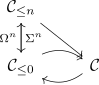
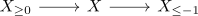
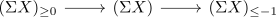

lower truncation of a t-structure
Definition
Let $\mathcal{C}$ be a stable infinity category equipped with a t-structure $(\mathcal{C}_{\geq 0}, \mathcal{C}_{\leq 0})$ Then the upper truncation is defined as left adjoint $\tau_{\geq 0}: \mathcal{C} \rightarrow \mathcal{C}_{\leq 0}$ to the inclusion $\mathcal{C}_{\leq 0} \rightarrow \mathcal{C}$.
For $n \in \mathbb{N}$ define the adjunction via the equivalence

note that:
- suspension as equivalence in a stable category
- the functor is by definition of $\mathcal{C}_{\leq n}$ essentially surjective (and fully faithful)
explicit pointwise description
for any object $X$ choose a fiber sequence

and map $X$ to $\Sigma (X_{\leq -1})$
alternatively choose a fiber sequence

and map $X$ to $(\Sigma X)_{\leq -1}$
Existence
analgous to upper truncation of a t-structure